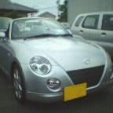

DVD＆GAMEをトータル販売するサイバーショップ登場！
| SDメモリカード | |||
| 平成15年5月31日土曜日 | |||
|
下に書いたプリンタと一緒にデジカメ用のSDメモリカードを買った。 こちらに書いたとおりデジカメの内蔵メモリだけでは不安だった為の購入。買い方もそのときに書いた通り割の良い容量の物を選んだ。1MBあたりの値段が一番安かったのは256MBだった為256MBのものを注文。その中でも一番安かった株式会社アイ・オー・データ機器のPCSD-256MSを10980円で注文。I/Oなら特に心配は無いだろう。 デジカメの内蔵メモリは10MB。これで私が普段使うモードだと約44枚撮影できる。256MBだと単純計算で1126枚撮影できる！まあ、静止画だけなら内蔵のみの44枚でも困ることはあまり無かったけど、動画を撮影するととたんに容量がなくなってしまうのでそれようですな。これで、動画もバシャバシャ撮れそうだ。 | |||
| hp psc1210 | |||
| 平成15年5月30日金曜日 | |||
|
プリンタが壊れてから3ヶ月が経った。 金欠が原因でこれまで新たなプリンタの購入を見送っていたのだが、今回hp psc1210を注文した。いつものように価格.COMで安いショップを探し注文。自宅近くのショップでは19800円で売っていたのでせいぜい1万6千円台かなあと思っていたら、14840円で売っていた。ただ、注文してみると送料が2500円・・・。注文するショップを間違えたかな・・・。まあ、それでも近くのパソコンショップでぱっと買うのよりは安いので良しとします。 予定通り複合機を購入。どれほどの性能かは使ってみないとわからないが、プリンタの大手メーカーの複合機が1万円台で買えるのだから良い時代になったものだ。 実家のマシンにはスキャナが付いていないので、これを実家に設置し、現在実家で使っているEPSON PM-730Cを自宅に持っていく予定。 ただ、自宅のスキャナってSCSI接続の古い物なんだよな。。もう長いこと使っていない(使う気になれない)・・・。 | |||
| コペン | |||
| 平成15年5月27日火曜日 | |||
|
この前の日曜日にセリカのオイルを交換して来た。 このときにコペンが置いてあってので見て来たのだが、｢浜岡町に3台しかない。｣そうだ。･･･いや、浜岡町って人口2万強の町なのよ。正直私は｢3台｢も｣?｣と思ってしまったのだが3台は多いのだろうか少ないのだろうか･･･。 i shot で激写!  | |||
| セリカ | |||
| 平成15年5月26日月曜日 | |||
|
私が2001年7月19日より乗っているのがトヨタのセリカ。平成13年型のZZTセリカで、所謂現行セリカの前期型です。 もうすぐセリカに乗って2年になるが、つい先日セリカ関連のサイトを見ていて初めて知った機能が2つほど。 1つ目が、キーをOFFにしてから45秒間はパワーウインドーが動くこと。キーをOFFにした瞬間に窓を開けたままだったって気がつくこと結構あるんだよね。これまでこんな機能があることを知らなくて、キーをONにしてから窓を上げていたよ･･･。試しにキーをOFFにして窓を操作してみたところ、しっかり動きました。これは、意外と便利だ。 2つ目は、室内ライト。キーが付いていない状態で室内ライトを付けたままにしておくと20分で自動でライトが消えるらしい(これは試していないので｢らしい｣)。私はセリカの前に乗っていたワゴンRで一度室内ライトの消し忘れでバッテリ上げちゃったことがあるんだよね。便利だ(-_-;) | |||
| 魔界転生 | |||
| 平成15年5月25日日曜日 | |||
|
映画｢魔界転生｣を観てきた。 う〜ん、いまいちわからない。私は映画観ても人よりストーリーの理解ができない方でやっぱりいまいち理解不能だった･･･。 この作品人気無いの？もう、公開終了間近であるにせよ土曜日の12:00からの回で5人しかいなかった･･･。 まあ、音楽は好きです。歴史上の有名人物が沢山出てくるのも好きです。所謂チャンバラも好きです。映像技術も好きです。私の地元が出てくるのも好きです。(w) さて、今回はバトルロワイアルII、マトリックス リローテッド、マトリックス レボリューションズの前売り券を一気に買ってしまった。どれも元々観るつもりだったものなので、特典付きの前売り券を早々に購入。次回は、マトリックス リローテッドかな。 | |||
| ｢新世紀エヴァンゲリオン｣、ハリウッドで実写映画化！ | |||
| 平成15年5月24日土曜日 | |||
|
｢新世紀エヴァンゲリオン｣が実写映画化！！！ ・・・と言うほど元々興味ないんだよね。テレビは地元のテレビで再送信されてからやっと見たし、映画もビデオを借りてみた。まあそういう意味では一通り見てはいるんだけど。そういえば、鋼鉄のガールフレンド2ndが5月16日に発売されましたね。私、一作目1万4千円ほど出して買ったのよ・・。これが一番｢新世紀エヴァンゲリオン｣でお金をかけたものだなあ。 映画見ないだろうなあ・・・。まあ、エヴァ好き(だった人)は見てみそ〜。 | |||
| 天外魔境III、来年度発売へ！ | |||
| 平成15年5月23日金曜日 | |||
|
私がかなり期待していたソフト、MOTHER3と天外魔境III。ここにきてこの二本が発売される見込みとなってきた。 MOTHER3はゲームソフトには珍しく、正式に発売中止まで発表されていたのにゲームボーイアドバンス用のソフトとつい最近復活が発表された。 そして今回。今年度に天外魔境II卍MARUをPS2とGCでリメイクして発売。天外魔境IIIは来年度に発売されるらしい。IIに関しては完成間近らしい。 私は天外魔境IIがかなり好きで、天外魔境IIIはとても期待をしていた、ここにも何度も｢天外魔境発売されないの？｣みたく書いた。サイト内検索で｢天外魔境｣と調べてみたところ、出てくる出てくる。 1998年11月11日 1999年2月5日 1999年3月10日 1999年7月17日 1999年9月14日 1999年11月22日 2000年8月22日 2001年7月23日 2002年5月18日 2002年10月16日 ここのコーナー、1998年11月11日から始まっているんだよね。つまり、このコーナー最初のネタが｢天外魔境IIIのために4万円捨てちまった！｣なのです・・。 ところで天外魔境III、以前作っていたものを発売するのかな。つまり天外魔境III"NAMIDA"が発売されるのかな。 これで再び発売が怪しくなったらもう笑います。 | |||
| マトリックス リローデッド | |||
| 平成15年5月22日木曜日 | |||
|
公開が近いマトリックスリローデッド。前作に続き今回も映画館に見に行こうと考えている。 前作のストーリーとかは全く覚えていない。映像を見に行った感じもあるので･･。リローデッドの前に一度DVD-Videoで復習しておこう。 前回映画を見た後のここへの記述も全く内容には触れていないし･･。まあ、ゲームでも映画でもここで私が内容に触れることの方が稀だが。 Yahoo!では特設サイトもオープン、取り敢えず予告ムービー見られます。皆さんも行ってみそ。 | |||
| BB5 | |||
| 平成15年5月22日木曜日 | |||
|
所謂、18禁美少女ゲーム。恥ずかしくて買えない人、逆に買いすぎて無駄にでかいパッケージがずらりと並んで困っている人。そんな人のためにストリーミングで美少女ゲームができるサイトが登場。 1000円で一ヶ月遊べるようで、インストールといった作業も不要らしい。誰でも、気軽に･･･とは行かないようで、｢遊遊key｣なる年齢認証ツールが必要になるらしい。 誰かやってみたらレビューくれ。。 BB5 | |||
| ローカルネタ | |||
| 平成15年5月21日水曜日 | |||
|
特に書くことが無い。SCEのPSP、DoCoMoのD505i、まあネタはあるのだが特に書く気も起きない･･。 と言うわけで逆切れして未だかつて無いほどローカルネタにしよう。
私の実家の前の道路、もう20年ほど前に拡幅工事が行われることが決定している。実家は道路よりも引っ込めて建てられているのだが、これは拡幅工事のときに道路に取られる分を後ろに下げて家を建てたから。引っ越してきたのは今から17年前、未だに拡幅工事は行われていない。 私の実家のある浜岡町は原子力発電所があるため金がある。その浜岡町、来年度はじめを目処に隣町御前崎町と合併の予定。合併後に旧浜岡町の財力を使って御前崎港に大幅に手を加え一台観光地化を目指すらしい。そのため、合併後に旧浜岡町に回ってくるお金が減るわけで、合併前に使っておきたいらしい。あと、一年のうちに浜岡町の姿が大きく変わるかも。そして、合併後旧御前崎町の姿が大きく変わるかも。 う〜ん、、、それだけ(-_-;) | |||
| MicrosoftOffice | |||
| 平成15年5月20日火曜日 | |||
|
デファクトスタンダードになっているMicrosoftのOffice。私のマシンにもOfficeXPがインストールされている。が、最近起動した記憶が無い。 そのためもあってしばしば他のソフトで代用できないか考える。フリーソフトのOpenOfficeが非常に強力でこれでも良いが、"スタンダード"のMS-Officeとはどうしても完全互換とは行かない。 ほとんど使わないソフトにお金はかけたくないが、"スタンダード"と互換の取れないソフトもあまり使いたくは無い。もっとも手っ取り早い解決方法が最新バージョンではないMS-Officeを買うこと。これなら安く"スタンダード"のソフトを手に入れられる。 最新バージョンでなくともOffice97程度で十分事足りると思われる。実際私の会社でもスタンダードはOffice97のフォーマットとなっている。 まあ、今買うとするとOffice2000辺りだろうか。メインに使うマシンには既にOfficeXPがインストールされているので、当分の間(バージョンアップをせずに)このまま使う予定。 ところでバージョンの古いソフトって普通のショップでは売っていないよね?となるとオークションなどで買うわけだが、それこそ下の方でくどくど書いたライセンスの問題が微妙だ。 | |||
| PC環境再構築 | |||
| 平成15年5月19日月曜日 | |||
|
下に書いたものの中で、｢ホームページの更新のためのパスワードを覚えておらず、FFFTPを開かないと更新できない状態にある｣という部分、元の環境に戻してFFFTPに保存されている情報でホームページが更新できるようになったところで、FFFTPではパスワードが***で表示されるため、遅かれ早かれパスワードがわからなくて困るときが来るのではないかと思われたと思う。 このホームページ、フリーのサービスを使っており、問い合わせを行いパスワードを教えてもらうことはまず間違いなく不可能。 大抵のサービスでパスワードを忘れたと時用に登録したときのメールアドレスにパスワードを送信するサービスがある。ここにもそのサービスがあったので、それを利用して万事解決。・・・と思ったら「登録してあるメールアドレスがずっと前のもので今はつかえないアドレスになっている。」と言った状態になっていて、これも不可能。 そこでFFFTPに設定されているパスワードの***をsnadboyなどのツールを使って読み出す、方法で行こうかと考えていた。 ところが、それを行う前に問題は解決してしまった･･･。 サービス提供元に問い合わせる方法は無理だと思っていたが、一応出しておいてもらった問い合わせのメールから結局パスワードを聞くことが出来てそれで解決。 まあ、解決したから良いのだが、こちらからは特に住所などの個人情報は出してもいないのに、簡単に教えてくれてしまった。ここのサービスセキュリティは大丈夫なのだろうか。。。 以前interQでセキュリティが硬くて苦労したことがあっただけに(これ)あまりに簡単に教えてもらえて驚いた。 | |||
| PC環境再構築 | |||
| 平成15年5月18日日曜日 | |||
|
例のWindowsMEをクリーンインストールしたPCだが、結局、元の状態に戻すことにした。 クリーンインストールする時は元々のCドライブをDドライブにして、新しく取り付けたハードディスクをCドライブとしてそこにWindowsMEをインストールしていた。まだ、旧システムファイルはそのまま取ってあったので、それを復活させることに。 一応元の状態に戻すことが出来た。メモリが64MBから256MBになり、ハードディスクを新たに取り付け容量がそれまでの倍以上になった部分は以前よりも快適にはなっているはずである。 結局、今回は、 ・ずっと使い続けているPCでだいぶ重い状態になっている ・同じ理由で不安定な状態になっている ・黒に近いソフトがインストールされている ・あともう一つ問題がある と言った理由からクリーンインストールをした。 が、 ・私が使い慣れていないNetscapeの設定で戸惑った ・ホームページを更新する際のパスワードを覚えておらず、FFFTPを開かないと更新できない状態になっている などなど、詳しい説明は割愛するが長い間再インストール無しに再インストールのことは考慮せずに使い続けていたがゆえに、他人がパッと触ってクリーンインストールできる状態に無かった。 と言った理由により結局元に戻すことに。 触られた側からすれば、特に問題なく動いていたのに弄られて”使いづらくなった”わけで、迷惑を受けた以外の何者でもないはず。 今後は、頼まれない限りは弄らないことにします。はい(-_-;) たとえ、「WindowsUpdateをしましょう。」「アンチウイルスソフトをインストールしましょう。」「黒に近いソフトを消しましょう。」と言う様な事でもグタグタ言うのはやめます。。。 | |||
| EXILIM ZOOM EX-Z3 | |||
| 平成15年5月13日火曜日 | |||
|
私が最近購入したデジカメだが、メモリは購入せず内蔵のメモリのみで使っている。 内蔵メモリだけだと私が普段撮影するモードで44枚撮影できる。あまり困ることは無いが、"旅行"と言ったレベルでの使用になると多少不安な枚数である。実際ディズニーシーでは使い切ってしまった。 お金に余裕が出てきたら、追加のメモリーカードを買おう。容量と値段を比べて割りの良いメモリを買おうと思うがそうすると64MB辺りだろうか。ちなみに、メモリはSDメモリカード。 話しは変わって、このEX-Z3、動画を撮影するモードがあるのだが、この動画をそのままEX-Z3で再生しても音声を聞くことができない。PCに落として再生すれば聞くことができるのだが、やはりEX-Z3で直接聞けないのはかなり不便である。まあ、我慢するしかないが･･･。 | |||
| もうちょっと続き | |||
| 平成15年5月12日月曜日 | |||
|
その使用約款のわかりにくさに対応したのが最近のマイクロソフトの出すソフトにつけられているプライベードアクティベーション。 これ、違法コピーを防ぐ機能として注目をされた。しかし、結局プロテクトを破られいたちごっこ。と批判されていたりする。 ただ、マイクロソフトは違法コピーを防ぐことを主目的に考えてはいないらしい。下に書いたように、使用約款をわかっていない人が"誤って"複数台にソフトをインストールしてしまうことを防ぐ目的があるらしい。 つまり、マイクロソフトのWindowsシリーズは一台のパソコンにのみインストールが認められているが、それを知らずに自分の持っている複数台のマシンにユーザーが"間違えて"インストールしてしまうことを防ぐことが目的らしい。 プライベートアクティベーションの面倒くささには賛成しかねるが、そのような目的には理解をしたい。小さな字で書かれた使用約款を読めだなんて現実的ではない。そうではなく、このように物理的に複数台にインストールできなくするなどはやらなければいけないと思われる。 | |||
| ディズニーシー | |||
| 平成15年5月11日日曜日 | |||
|
土曜日にバスツアーを利用してディズニーシーに行ってきた。 ディズニーランドは何度か行ったことがあるが、ディズニーシーの方は今回がはじめて。ディズニーランドにしても最後に行ったのは10年以上前になる。 3:30に静岡県内の東名吉田ICからバスに乗車、渋滞も無く順調にディズニーシーに7:00に到着。開園時間の8:00に入場することができた。 ディズニーは掃除にずいぶんと力を入れていることが有名だが、確かに園内はとてもきれい。普通道端は汚れているのが当たり前だが、すみの方まできれいにされていて抵抗無く座れてしまいそう。(座らないが) チケットはパスポートのみになったのですね。ディズニーシーは最初からだろうが、ディズニーランドの昔のシステムしか知らなかったので知らなかった。あらかじめ、アトラクションの乗車予約をしておくファストパスも知ってこそいたが実際に使うのははじめて。ディズニーシーは夢の世界なわけだが、乗り物に乗るときにチケットを買ってチケットを出すとか、パスポートにせよパスポートを係りの人に出す、と言った現実の世界に引き戻される行為が無いことは非常に好感が持てる。パスポートのみにすれば、チケット発券、チケット回収、と言ったことがすべて無くなり、ディズニー側にしてもメリットが大きいでしょうね。大したものだ。 知らずに行ったのだが、5月10日からちょうど｢アニエルのシーサイドトレジャー｣なるイベントが始まっていてそれを見ることができた。この日はディズニーにしては空いている方だったが、流石にパレードともなるとだいぶ後方から見る羽目に。でも、遠いくらいの距離の方が良いのかも。綺麗な人魚のお姉さんは"綺麗な人魚のお姉さん"のまま楽しむことができる。表情がわかるほどの近い距離だと途端に現実の世界に戻されそうだが、夢の世界のまま楽しむことができる。 どのアトラクションがどうだった、とかは長くなるので割愛。 夢の世界を閉演時間まで満喫することができました。皆様も夢の世界に行ってネズミさんにあってくると楽しいですよ。 そう言えば、そのネズミさんの声、、、やっぱり、違和感があると言うかなんと言うか･･･。 | |||
| 更なる続き | |||
| 平成15年5月10日土曜日 | |||
|
さてそのパソコンソフトの使用約款について。 これ、いちいち読んでいる人どのくらいいますか? そもそもソフトによってインストール可能台数などが違うことはご存知ですか? 一般的にはパソコン本体などにバンドルされているソフトはそのパソコンでのみ使用が認められている。パッケージとして一般に売られているソフトには、｢複数人で使う場合は一台のみ、一人で使う場合には複数台に可｣(ジャストシステムなど)、｢一台のみ｣などがある。これまで見てきた中で一番厳しかったのが、｢最初にインストールした一台のみ｣一般のパッケージソフトなのにバンドルソフト並みの厳しさ･･･。 こう言ったこと守る守らない以前にソフトによって規約が違うことを知っている人が果たしてどれだけいるやら････。 | |||
| まだ続き | |||
| 平成15年5月9日金曜日 | |||
|
音楽CDに関してだが、下に書いたとおりレンタル屋さんでCDを借りてMDに録音することは、レンタル料に著作権料が含まれているため認められている。 度々、問題になるのは音楽用のCD-Rについて、音楽用のCD-RにはCD-Rに著作権料が乗っているため、レンタル屋さんに払う著作権料とあわせて二重に料金が取られているのではないかと言うこと。 さらにこれに関して思うことは、CD-Rに著作権料が乗っているということは、友達にCDを借りてこの音楽用CD-Rに焼くことは問題ないということだろうか、この辺どうなっているのですか? 同じくレンタル屋さんで借りることのできるVTRにDVD-Video、これはコピーしてはいけないんだよね? パソコンソフトも含めてこういうの全部把握している人なんているのかな･･･。 少々この話しとはずれるが以前は音楽用CD-Rは著作権料が乗っているだけで買うだけ損と言われていたが、最近の音楽用CD-Rは音質が良くなるように作られているらしい、そのため最近は音にこだわる人は音楽用のCD-Rを買った方が良いらしい。 | |||
| さらに続き | |||
| 平成15年5月8日木曜日 | |||
|
同様なことに音楽ソフトの違法コピーがある。 不特定多数にCD-Rやmp3などを配布することは論外として、友達にCDを借りてMDに録音することも厳密には違法行為。(ちなみにレンタルCDをMDに録音するのは合法。このための料金もレンタル料に含まれている為。) でもこの行為、誰だって普通にやっていることだよね。それどころかJASRACの関係者がこのようなものは黙認していると""公言""している。 だから、パソコンソフトに関しても同じだよなあ、と思う。不特定多数に配るのはやっぱり論外としても、友達に貸したりすることは"私的利用"で問題ないと思うんだよね。どうなんだろ、この辺は。このレベルで捕まったという話しはもちろん聞いたことが無い。 何故、こんなに頭を使って考えているのだろう私は。いっそのこと、マイクロソフトのように物理的に複数台にインストールできなくしてくれた方があきらめもつく(-_-;) ところで｢友達にソフトを借りてインストールして返す｣、と言うのは大したことではないけど、CD-Rに焼いてもらって受け取ると言うのは途端に違法性が強くなると思わない?持つ権利の無い者がマスターと同じものを持つことになるのだからこの感覚は間違いでは無いと思うが。 | |||
| 続き | |||
| 平成15年5月7日水曜日 | |||
|
パソコンだが、予想以上に不安定になっているらしい。OSをクリーンインストールしているし、元々メーカー製のパソコンなのでおそらく原因は交換したメモリにあると思われる。 自分が持っていなかったソフトが使えなくなったことは仕方が無いにせよ、これらも含めて以前よりも不安定＋使いづらくなったことは事実。今週末にもう一度パソコンを触らせてもらって何とかしたい。 不安定なのがメモリが原因ならすぐ直るが、原因が他にあったら厄介だ。。ソフトに関しては、ホームページビルダー、フォトショップエレメント(フォトショップなんてとても買えない)を買って入れればとりあえず必要なソフトは揃いそう。 なんか違法コピーバリバリな人に見えるかもしれないけど、自分の使いたいソフトを友達に借りているってレベルですので、誤解をしないように。私がクソ真面目に｢しっかり買わないと違法ですヽ(`Д´)ノ｣とか言っているだけです。う〜〜ん、私的利用として問題ない範囲なんだろうなあ。僕がグタグタ言い出して迷惑をかけているだけなのかも･･･。 | |||
| OS再インストール | |||
| 平成15年5月5日月曜日 | |||
|
え〜、今回人様のパソコンを弄ったのですよ。ちょっと不安定だったりしたので。 64MBのメモリを128MB×2にしてWindowsUpdateを実行、が、前よりも不安定になってしまった･･･。 結局、自分の持っていたHDDを取り付けそこにWindowsMEをクリーンインストール、元のハードディスクをD、Eドライブとした。 一通りインストールを終え帰ってきたのだが、ネットスケープのブックマーク、メール、アドレス帳が元に戻っていないと伝えられる。四苦八苦した挙句何とかそれは復活。ネスケは普段自分が使っていないのでちょっと戸惑ってしまった。 ホームページビルダーをこれまで使っていたが、そのホームページビルダーは友達に借りて入れたものだそうで、つまり自分では持っていないと。と言うことで、私がホームページビルダー7.0を買って、それまで使っていた6.5を渡すことに。 この辺ってグレーゾーンなんだよね。厳密にソフトウェア使用約款にのっとると友達に借りたソフトを使うってことはいけないことなんだけど、どう考えても"私的利用"として許されるべきものだと思う。同様に、複数台パソコンを持っている場合、一台のパソコンにしかソフトをインストールしてはいけないって、現実的でないよね。僕はまじめにそのように約款に書かれているソフトについてはインストールするパソコンの台数分ソフトを買っている･･･。(ちなみに、ホームページビルダーは複数代のパソコンへのインストールが許可されている) ん〜、今回ホームページビルダー新しく買わなくても僕のを貸しても良かったかな。はっきり言ってしまうと、友達どころか彼女で友達よりももっと近い人だし･･･。 さて、そのパソコンの話しに戻ると、WindowsMEをクリーンインストールしたもののまだ不安定らしい。これは、交換したメモリに問題があるのか、Windows9xの限界なのか、でも、、以前よりは快適になっているよね??? あ〜、これを機会にぶっちゃけホームページビルダーよりも黒に近いソフトは破棄しましょうね。。 | |||
| バナー | |||
| 平成15年5月3日土曜日 | |||
|
5月1日にバナーを直リンクから自サイト保存に変更する、と書いたが、その後、5月2日の更新ではやはり直リンクにしてある。 いざ、直リンクをやめようと思ったときに困ったことがあった為で、それは、バナーのファイル名をどうするかということ。今後の管理の為にも一意にファイル名を付けたいのだが、どうやって付けるか。単純にサイト名をローマ字で付ける辺りが無難かなあ。う〜ん、結構困る。 リンク数が多いだけにきっちりポリシーを決めておかないとあとで泣く羽目になるんだよね。 | |||
| 伊豆 | |||
| 平成15年5月2日金曜日 | |||
|
私は、4月27日〜5月5日の9連休のGWである。 5月2日3日の2日間伊豆の旅行に行ってまいります。1日目に修善寺虹の郷、2日目に伊豆高原周辺を見て回る予定。 虹の郷は10年以上前に父と行って以来の2回目になる。この時は、スタンプラリーをただひたすらやったのみで、全然と言って良いほど見ていない。何かアトラクションがあるようなところではないので、小学生の当時の私には少々つまらない場所だったのかもしれない。そういう意味でも今回はちょっと楽しみにしている。2日目の伊豆高原は始めていくので、もちろん楽しみ。 カーナビがあるので道に迷う心配はしていないが、5月3日の渋滞が非常に心配。 | |||
| バナー | |||
| 平成15年5月1日木曜日 | |||
|
このサイトのバナー付きのリンクのバナーはリンク先サイトのバナーに直リンクをしている。それは、デッドリンクになった場合、バナーが表示されなくなり一目でデッドリンクだとわかるから。 しかし、ここ最近はデッドリンクの修正をほとんどやっていない。見た目が汚いだけの状態なので、バナーは自サイトに持ってくる方式に変更しようかと考えている。その場合は、当然バナー分の容量が必要になるのだが、このサイトはもともとテキスト中心のサイトなので、バナーを保存することによる容量の圧迫の心配は当面は無いと思われる。 もしかしたら、次回更新からバナー直リンクはやめるかも。 あと、有名無実化しているリンク数の表示。(デッドリンクが多数含まれている状態なので"有名無実") これもどうしようかと検討中。トップページの表示のみ目安として残し、更新履歴の部分の表示を無くす。など、検討中。 | |||